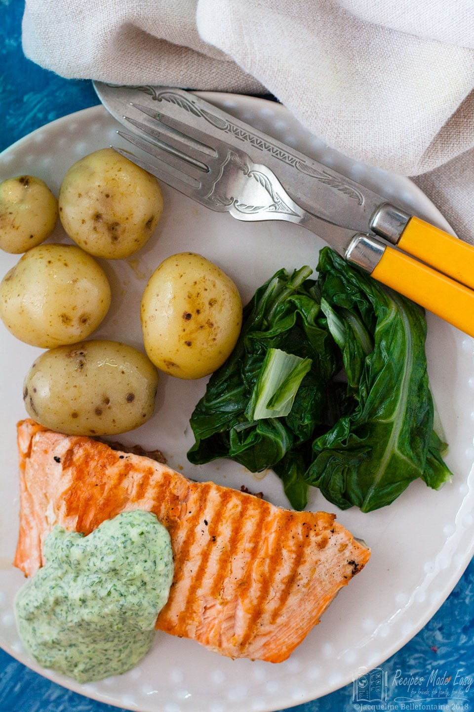

Home
Salmon with Watercress Sauce

Description
If you are looking for a quick and easy fish dish with a summery flavour, seared salmon with watercress sauce is just what you are after.
The fresh zingy watercress sauce works perfectly with the salmon and is so simple to makexxxxxx
Ingredients
- 4 salmon fillets
- a little rapeseed oil optional
- 50 g watercress (2oz)
- 4 spring onions trimmed and roughly chopped
- 150 g crème fraîche (5oz)
- Generous pinch grated nutmeg
- salt and freshly ground black pepper
Steps
- Preheat the oven to 200℃ (180℃ fan)/400°F/gas mark 6.
- Season 4 salmon fillets.
- Heat a griddle pan over a medium high heat. Add the salmon flesh side down and sear for 1 to 2 minutes, turn over and sear the other side. You can also do this on a frying pan (skillet) if desired
- Place the fish in the oven and bake for 5 minutes. You can leave the fish in the pan if it is ovenproof, if not transfer to a baking tray.
- Meanwhile, place 50g watercress, 4 chopped spring onions, and 150g crème fraîche s in a food processor or liquidizer. Season with a little grated nutmeg, salt and pepper, then process for a few minutes until well blended.
- Check the seasoning of the sauce and adjust if necessary.
- Serve the salmon with the sauce and vegetables of your choice